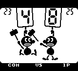
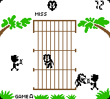
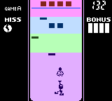
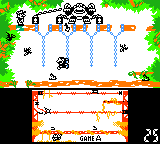

|
|
| これがピーチ姫からの素敵なプレゼントだ！かなり豪華だぞ！思う存分楽しんでね。 |
|
|
| これがピーチ姫からの素敵なプレゼントだ！かなり豪華だぞ！思う存分楽しんでね。 |
| ★FLAG MAN フラッグマン | |

|
COMがあげる旗を記憶して順番にあげたり（GAME A）、同じ旗をすばやくあげたりする（GAME B）ゲームです。やりこむほどに悟りの境地に近付けること間違いなしです。 ★上達へのコツ三箇条 一、数字に対応しているキーを覚えるべし 一、音とリズムで覚えるべし（GAME A） 一、反射神経を鍛えるべし（GAME B） |
| ★JUDGE ジャッジ | |
|  |
左の人より大きい数字または同じ数字のときに相手をたたくゲームです。通信ケーブルを使えば友達と対戦することができます。けんかにならないように気をつけましょう。 ★上達へのコツ三箇条 一、たたくキーとにげるキーを決めるべし 一、デジタル数字に慣れるべし 一、打つべし打つべし |
| ★LION ライオン | |
|  |
左右の人を操作して飛び出してくるライオンをオリに戻すゲームです。操作はマリオブラザーズと同じです。ライオンに食べられないように注意しましょう。 ★上達へのコツ三箇条 一、ボタンの同時押しに気をつけるべし 一、まん中を起点に上下に動くべし 一、ライオンのフェイントを見切るべし |
| ★SPITBALL SPARKY スピットボールスパーキー | |
|  |
ボールを吹き上げて落とさないようにブロックを消していくゲームです。名前も画面もおしゃれな感じですが、ゲームはなかなか難しいですよ。根気よくふ〜ふ〜しましょう。 ★上達へのコツ三箇条 一、ボールの軌道を読むべし 一、一番上のブロックを６つ点滅させるべし 一、肺を鍛えるべし（うそ） |
| ★DONKEY KONG II ドンキーコング II | |
|  |
ドンキーコングJR.同様、とらわれたコングを助けにいくゲームです。カギは取りやすいところにありますが、下でとったらもう一度上で取る必要があります。 ★上達へのコツ三箇条 一、画面切り換えをすばやくするべし 一、電気に気をつけるべし 一、鳥の動きを読むべし |
|
|